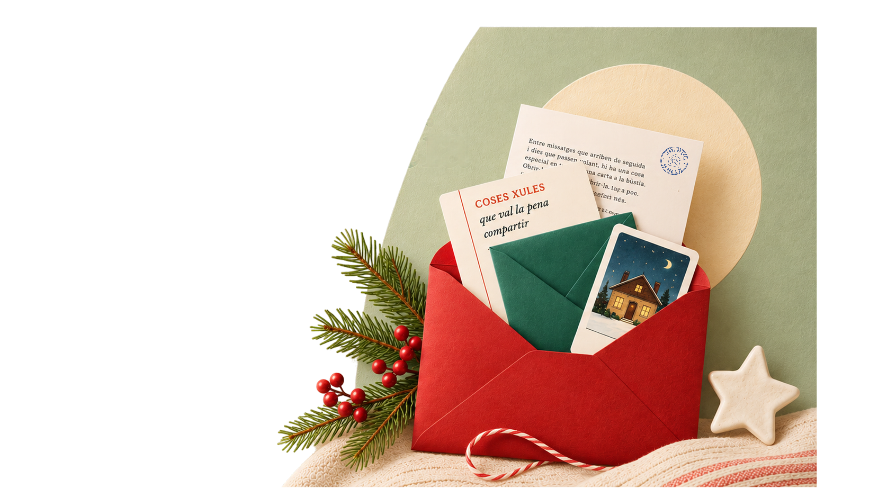
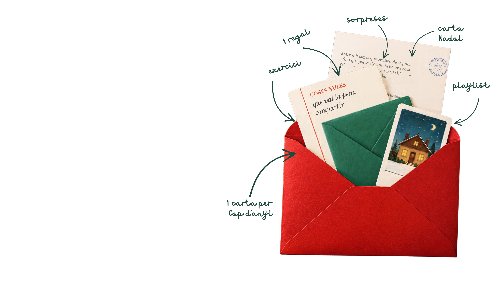

Tot comença amb un sobre ple de sorpreses
Rebràs un sobre ple de coses boniques: una carta per llegir amb calma, una playlist per posar-hi banda sonora, una petita proposta per fer i alguns detalls que preferim no revelar.
Torna a mirar la bústia amb il·lusió
Tens una carta.
I porta el teu nom.
Dues cartes per a dos moments de les festes, petites sorpreses i un regal especial.
Vull la meva correspondència
Una invitació a parar
Entre missatges que arriben a l’instant i dies intensos que passen volant, trobar una carta a la bústia té alguna cosa especial. Obrir-la. Llegir-la a poc a poc. Guardar-la per tornar-hi. Correspondència de Nadal és una experiència feta de cartes, paraules i petites sorpreses, pensada per recuperar el plaer d’aquests moments i regalar-te una pausa enmig de les festes.
Un sol enviament · dues cartes · dos moments
Rebràs un sobre ple de coses boniques: una carta per llegir amb calma, una playlist per posar-hi banda sonora, una petita proposta per fer i alguns detalls que preferim no revelar.
Dins del mateix enviament hi trobaràs un segon sobre, tancat i reservat per al primer dia de l’any.
Guarda’l fins a l’1 de gener. Aquell dia tindràs una nova carta per obrir, llegir i començar l’any amb una mirada nova.

Prepararem tots els enviaments amb temps i molta cura perquè la teva correspondència arribi abans de Nadal. I recorda: a dins hi haurà una segona carta que només et demanarà una cosa… una mica de paciència fins a l’1 de gener!
Vull la meva correspondènciaParaules que han tornat a la bústia
Així van viure algunes persones la Correspondència d’Estiu. Paraules reals d’una experiència que continua aquest Nadal.
«La correspondència d'estiu ha sigut or. Un autoregal que ha sigut màgic. M'ha anat super bé.»
«Moltes gràcies per aquesta iniciativa, m'ha encantat participar. M'enduc la il·lusió d'esperar que m'arribes a la bústia la supercarta, amb tots els seus detalls; tot i ser vacances sabia que quan tornava tenia la carta esperant-me. També m'he fet un ritual per obrir-la, buscar un lloc especial i estar present.»
«M'ha encantat aquesta experiència, ja m'imaginava que seria algo bonic, pero no m'imaginava que m'impactaria tan, ni que m'agradaria tan esperar la carta i obrir-la amb moltíssima il·lusió. M'ha servit per reconnectar i cuidar-me. Gràcies!»
«Un dels reguals més bonics que m'han fet en temps!, ja espero la propera edicio per poder-ho regalar jo»
Testimonis de participants de Correspondència d’Estiu 2026.
Potser aquest Nadal la propera carta serà per a tu. O per a algú que estimes.
Vull la meva correspondènciaPetites coses que fan il·lusió
Un únic enviament postal amb tot el que necessites per viure l’experiència.
Una carta per obrir durant les festes de Nadal i, a dins del mateix enviament, un segon sobre tancat que hauràs de guardar fins a l’1 de gener.
Una playlist molt especial, un exercici per al benestar i alguns detallets pensats per acompanyar l’experiència.
Un detall que encara no podem desvetllar.
Quan la bústia et cuida

Rebràs la correspondència a casa en un únic enviament postal.
Obriràs dues cartes pensades per a dos moments de les festes.
Et reservaràs una estona per llegir, respirar i gaudir de les petites sorpreses.
Prepararem els enviaments amb antelació perquè la correspondència pugui arribar abans del 24 de desembre de 2026. La data de lliurament dependrà del servei postal.
Un detall amb temps a dins
Per a qui sempre és al teu pensament. Per a algú que necessita una pausa. O per a tu, perquè també et mereixes una cosa que arribi amb el teu nom.
Descobreix l’edicióAbans que arribi la carta
És molt fàcil! Quan facis la compra, introdueix primer el teu nom i correu electrònic. Després, al desplegable «És un regal?», selecciona «Sí, és un regal».
A l'apartat d'enviament, escriu el nom i l'adreça de la persona a qui vols sorprendre. Finalment, introdueix les teves dades de facturació i completa el pagament.
Nosaltres ens encarregarem que la correspondència arribi directament a la seva bústia!
Veure com omplir el formulari si és un regalUn de sol! Rebràs tota la Correspondència de Nadal en un únic enviament. A dins hi trobaràs una carta per obrir als volts de Nadal i un segon sobre tancat, que hauràs de guardar fins a l'1 de gener.
Dues cartes per a dos moments diferents de les festes.
Prepararem i enviarem les correspondències amb prou antelació perquè puguin arribar abans del 24 de desembre. Tot i això, el termini final de lliurament depèn del servei postal.
Tot! Les dues cartes, una playlist molt especial, un exercici pro benestar, petites sorpreses, un regal especial i l'enviament postal a Espanya (Península, Illes Balears i Illes Canàries). No hi ha despeses d'enviament addicionals.
I tant! Correspondència també és una invitació a fer-te un autoregal: una mica de temps per a tu, una pausa i dos moments per gaudir sense presses.
De moment, no. Aquesta edició de Correspondència de Nadal només s'enviarà a adreces d'Espanya (Península, Illes Balears i Illes Canàries). El preu de 49 € inclou totes les despeses d'enviament.
I tant! Pots comprar-ne més d'una, però hauràs de fer una compra per cada correspondència, ja que cada enviament necessita les seves pròpies dades.
Per agilitzar les compres següents, et recomanem que utilitzis l'opció de desar les dades de pagament a Stripe, si la tens disponible.
Una edició limitada
Dues cartes, petites sorpreses i un regal especial, tot preparat amb cura perquè arribi a la teva bústia. Una experiència completa per 49 €, amb l'enviament inclòs.
Correspondència de Nadal · 2026
49 € · Tot inclòs
Completa la compra a StripeEl pagament es completarà de manera segura a Stripe.